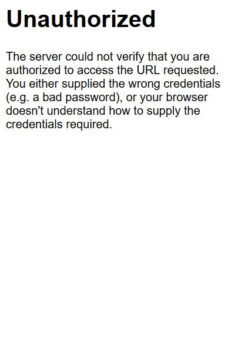

這次實作目標是導入Flask-Login，讓咱們的app受驗證機制保護
完成的source code放在這裡
首先下載Flask-Login
$ pip install Flask-Login
因為原本測試的model就叫username了，為了避免混淆，login的user叫admin
import flask_login
...
login_manager = flask_login.LoginManager()
login_manager.init_app(app)
app.secret_key = b'_5#y2L"F4Q8z\n\xec]/'
#測試用的帳號
admins = {'testadmin': {'password': '123'}}
#繼承自UserMixin
class Admin(flask_login.UserMixin):
pass
#存放session用
@login_manager.user_loader
def user_loader(admin_name):
if admin_name not in admins:
return
admin = Admin()
admin.id = admin_name
return admin
admin = Admin()
admin.id = admin_name
admin.is_authenticated = request.form['password'] == admins[admin_name]['password']
return admin
這樣login_manager就能動了
接下來加上decorator，就能測試動作了
@app.route('/')
@flask_login.login_required
def list():
users = User.query.all()
return render_template('list.html', users=users)

可以使用@unauthorized_handler這個decorator，在Unauthorized時做自己想要的動作，比如redirect，下列的範例是導向回login
@app.login_manager.unauthorized_handler
def unauth():
return redirect(url_for('login'))
接下來增加一個新的view，就是剛才提到的login
@app.route('/login', methods=['GET', 'POST'])
def login():
if request.method == 'POST':
admin_name = request.form['user']
try:
if request.form['password'] == admins[admin_name]['password']:
admin = Admin()
admin.id = admin_name
flask_login.login_user(admin)
return redirect(url_for('list'))
except:
return render_template('login.html', error='Login Failed')
return render_template('login.html')
這樣子驗證不過的話，同樣會回到login，成功的話則重新導向到list
<!doctype html>
<html>
<head>
<link rel="stylesheet" href="https://maxcdn.bootstrapcdn.com/bootstrap/4.0.0/css/bootstrap.min.css" integrity="sha384-Gn5384xqQ1aoWXA+058RXPxPg6fy4IWvTNh0E263XmFcJlSAwiGgFAW/dAiS6JXm" crossorigin="anonymous">
<title>Flask CRUD Example</title>
</head>
<body>
<div class="container mt-4">
<div class="row">
<div class="col-12">
<div class="card">
<h5 class="card-header">
Login
</h5>
<div class="card-body">
<form method="post">
<div class="form-group">
<input type="text" name="user" placeholder="Username" class="form-control">
</div>
<div class="form-group">
<input type="text" name="password" placeholder="Password" class="form-control">
</div>
<button class="btn btn-primary" type="submit">Submit</button>
</form>
{% if error %}
{{ error }}
{% endif %}
</div>
</div>
</div>
</div>
</div>
</body>
<script src="https://code.jquery.com/jquery-3.2.1.slim.min.js" integrity="sha384-KJ3o2DKtIkvYIK3UENzmM7KCkRr/rE9/Qpg6aAZGJwFDMVNA/GpGFF93hXpG5KkN" crossorigin="anonymous"></script>
<script src="https://cdnjs.cloudflare.com/ajax/libs/popper.js/1.12.9/umd/popper.min.js" integrity="sha384-ApNbgh9B+Y1QKtv3Rn7W3mgPxhU9K/ScQsAP7hUibX39j7fakFPskvXusvfa0b4Q" crossorigin="anonymous"></script>
<script src="https://maxcdn.bootstrapcdn.com/bootstrap/4.0.0/js/bootstrap.min.js" integrity="sha384-JZR6Spejh4U02d8jOt6vLEHfe/JQGiRRSQQxSfFWpi1MquVdAyjUar5+76PVCmYl" crossorigin="anonymous"></script>
</html>
到這裡login就算完成了
接下來就是logout，這次做簡單一點，就直接導向回login
@app.route('/logout')
def logout():
flask_login.logout_user()
return redirect(url_for('login'))
接著在base.html上增加logout的按鈕
|
|
再適當的用@flask_login.login_required來修飾其他的頁面，就能看看成果了
其實還不算太難看吧？